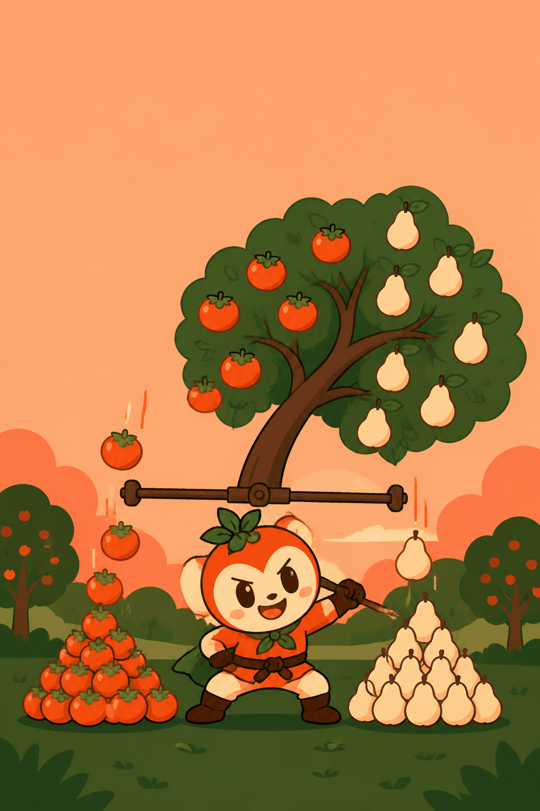

0
수평 ×1
🔊
합 0 · 열매 0개
1그루
◀
여기에 놓기
▶
🍯 예측 칩
0
1
2
1
감 0
·
배 0
열매가 떨어지는 중…
다음 나무로 →
관찰 일지
이론
-
이번 12회
-
누적
-

5학년 2학기
평균과 가능성
기
우
뚱
나
무
기울면 열매가 떨어져
수평 맞추기
어떻게 놀아요? 〉
🔊
1/3
어려움 — 정확한 눈금에만 성공
다음
화면을 탭해도 넘어가요
과수원 정리 끝!
⭐
점수
0
바로 세운 나무
0
최고 연속 수평
0
최고 기록
0
다시 하기 🌳